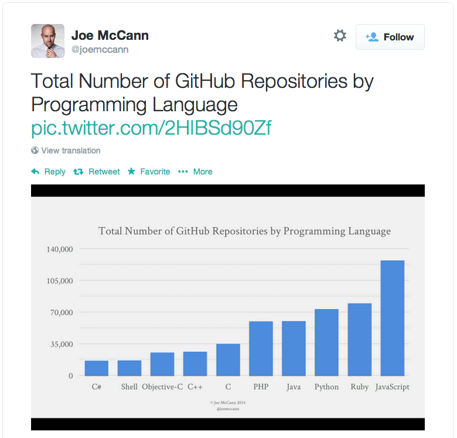

Peter Jensen
Intel® Corporation
|  |
|
SIMD instructions are an increasingly larger
portion of instruction set architectures of newer CPUs
Currently, no way to utilize these powerful instructions
from JavaScript* programs
float average(float *src, int len) {
float sum = 0.0;
for (int i = 0; i < len; ++i) {
sum = sum + src[i];
}
return sum/len;
}
#if defined(__i386__)
float simdAverage(float *src, int len) {
__m128 sumx4 = _mm_setzero_ps();
for (int i = 0; i < len; i += 4) {
sumx4 = _mm_add_ps(sumx4, _mm_loadu_ps(src));
src += 4;
}
float sumx4_mem[4];
_mm_storeu_ps(sumx4_mem, sumx4);
return (sumx4_mem[0] + sumx4_mem[1] +
sumx4_mem[2] + sumx4_mem[3])/len;
}
#elif defined(__arm__)
float simdAverage(float *src, int len) {
float32x4_t sumx4 = vdupq_n_f32(0.0);
for (int i = 0; i < len; i += 4) {
sumx4 = vaddq_f32(sumx4, vld1q_f32(src));
src += 4;
}
return (vgetq_lane_f32(sumx4,0) + vgetq_lane_f32(sumx4,1) +
vgetq_lane_f32(sumx4,2) + vgetq_lane_f32(sumx4,3))/len;
}
#else
float simdAverage(float *src, int len) {
return average(src, len);
}
#endif
function simdAverage(src, len) {
var sumx4 = SIMD.float32x4.splat(0.0);
var srcx4 = new Float32x4Array(src.buffer);
for (var i = 0, n = len/4; i < n; ++i) {
sumx4 = SIMD.float32x4.add(sumx4, srcx4.getAt(i));
}
return (sumx4.x + sumx4.y + sumx4.z + sumx4.w)/len;
}
function updateAllConstantAccel(timeDelta) {
var timeDeltaSec = timeDelta/1000.0;
var timeDeltaSecSquared = timeDeltaSec*timeDeltaSec;
for (var i = 0; i < actualBirds; ++i) {
var pos = posArray[i];
var vel = velArray[i];
var newPos = 0.5*accelData.valueConst*timeDeltaSecSquared + vel*timeDeltaSec + pos;
var newVel = accelData.valueConst*timeDeltaSec + vel;
if (newPos > maxPos) {
newVel = -newVel;
}
posArray[i] = newPos;
velArray[i] = newVel;
}
}
function updateAllSimd(timeDelta) {
var steps = accelData.steps;
var accelCount = accelData.values.length;
var subTimeDelta = timeDelta/steps/1000.0;
var posArrayx4 = new Float32x4Array(posArray.buffer);
var velArrayx4 = new Float32x4Array(velArray.buffer);
var maxPosx4 = SIMD.float32x4.splat(maxPos);
var subTimeDeltax4 = SIMD.float32x4.splat(subTimeDelta);
var subTimeDeltaSquaredx4 = SIMD.float32x4.mul(subTimeDeltax4, subTimeDeltax4);
var point5x4 = SIMD.float32x4.splat(0.5);
for (var i = 0, len = (actualBirds+3)>>2; i < len; ++i) {
var newVelTruex4;
var accelIndex = 0;
var newPosx4 = posArrayx4.getAt(i);
var newVelx4 = velArrayx4.getAt(i);
for (var a = 0; a < steps; ++a) {
var accel = accelData.values[accelIndex];
var accelx4 = SIMD.float32x4.splat(accel);
accelIndex = (accelIndex + 1) % accelCount;
var posDeltax4;
posDeltax4 = SIMD.float32x4.mul(point5x4, SIMD.float32x4.mul(accelx4, subTimeDeltaSquaredx4));
posDeltax4 = SIMD.float32x4.add(posDeltax4, SIMD.float32x4.mul(newVelx4,subTimeDeltax4));
newPosx4 = SIMD.float32x4.add(newPosx4, posDeltax4);
newVelx4 = SIMD.float32x4.add(newVelx4, SIMD.float32x4.mul(accelx4, subTimeDeltax4));
var cmpx4 = SIMD.float32x4.greaterThan(newPosx4, maxPosx4);
newVelTruex4 = SIMD.float32x4.neg(newVelx4);
newVelx4 = SIMD.int32x4.select(cmpx4, newVelTruex4, newVelx4);
}
posArrayx4.setAt(i, newPosx4);
velArrayx4.setAt(i, newVelx4);
}
}// z(i+1) = z(i)^2 + c
// terminate when |z|^2 > 4.0
// returns 4 iteration counts
//
function mandelx4(c_re4, c_im4) {
var z_re4 = c_re4,
z_im4 = c_im4,
four4 = SIMD.float32x4.splat (4.0),
two4 = SIMD.float32x4.splat (2.0),
count4 = SIMD.int32x4.splat (0),
one4 = SIMD.int32x4.splat (1),
i, z_re24, z_im24, mi4, new_re4, new_im4;
for (i = 0; i < max_iterations; ++i) {
z_re24 = SIMD.float32x4.mul (z_re4, z_re4);
z_im24 = SIMD.float32x4.mul (z_im4, z_im4);
mi4 = SIMD.float32x4.lessThanOrEqual (SIMD.float32x4.add (z_re24, z_im24), four4);
// if all 4 values are greater than 4.0, there's no reason to continue
if (mi4.signMask === 0x00) {
break;
}
new_re4 = SIMD.float32x4.sub (z_re24, z_im24);
new_im4 = SIMD.float32x4.mul (SIMD.float32x4.mul (two4, z_re4), z_im4);
z_re4 = SIMD.float32x4.add (c_re4, new_re4);
z_im4 = SIMD.float32x4.add (c_im4, new_im4);
count4 = SIMD.int32x4.add (count4, SIMD.int32x4.and (mi4, one4));
}
return count4;
} var src0 = srcx4.getAt(0);
var src1 = srcx4.getAt(1);
var src2 = srcx4.getAt(2);
var src3 = srcx4.getAt(3); tmp01 = SIMD.float32x4.shuffleMix(src0, src1, SIMD.XYXY);
tmp23 = SIMD.float32x4.shuffleMix(src2, src3, SIMD.XYXY);
dst0 = SIMD.float32x4.shuffleMix(tmp01, tmp23, SIMD.XZXZ);
dst1 = SIMD.float32x4.shuffleMix(tmp01, tmp23, SIMD.YWYW); dstx4.setAt(0, dst0);
dstx4.setAt(1, dst1);
dstx4.setAt(2, dst2);
dstx4.setAt(3, dst3);Full implementation available internally at Intel®.
Full interpreter implementation has landed in nightly.
Full OdinMonkey JIT compiler (asm.js) implementation has landed in nightly.
IonMonkey JIT compiler work is ongoing.
Full implementation available internally at Intel®.
Patch submitted to Chromium*.
Full implementation available TODAY!
Download the Intel® XDK: xdk.intel.com
Build with Crosswalk Beta
This presentation: peterjensen.github.io/html5-simd/
INFORMATION IN THIS DOCUMENT IS PROVIDED IN CONNECTION WITH INTEL PRODUCTS. NO LICENSE, EXPRESS OR IMPLIED, BY ESTOPPEL OR OTHERWISE, TO ANY INTELLECTUAL PROPERTY RIGHTS IS GRANTED BY THIS DOCUMENT. EXCEPT AS PROVIDED IN INTEL'S TERMS AND CONDITIONS OF SALE FOR SUCH PRODUCTS, INTEL ASSUMES NO LIABILITY WHATSOEVER AND INTEL DISCLAIMS ANY EXPRESS OR IMPLIED WARRANTY, RELATING TO SALE AND/OR USE OF INTEL PRODUCTS INCLUDING LIABILITY OR WARRANTIES RELATING TO FITNESS FOR A PARTICULAR PURPOSE, MERCHANTABILITY, OR INFRINGEMENT OF ANY PATENT, COPYRIGHT OR OTHER INTELLECTUAL PROPERTY RIGHT.
A "Mission Critical Application" is any application in which failure of the Intel Product could result, directly or indirectly, in personal injury or death. SHOULD YOU PURCHASE OR USE INTEL'S PRODUCTS FOR ANY SUCH MISSION CRITICAL APPLICATION, YOU SHALL INDEMNIFY AND HOLD INTEL AND ITS SUBSIDIARIES, SUBCONTRACTORS AND AFFILIATES, AND THE DIRECTORS, OFFICERS, AND EMPLOYEES OF EACH, HARMLESS AGAINST ALL CLAIMS COSTS, DAMAGES, AND EXPENSES AND REASONABLE ATTORNEYS' FEES ARISING OUT OF, DIRECTLY OR INDIRECTLY, ANY CLAIM OF PRODUCT LIABILITY, PERSONAL INJURY, OR DEATH ARISING IN ANY WAY OUT OF SUCH MISSION CRITICAL APPLICATION, WHETHER OR NOT INTEL OR ITS SUBCONTRACTOR WAS NEGLIGENT IN THE DESIGN, MANUFACTURE, OR WARNING OF THE INTEL PRODUCT OR ANY OF ITS PARTS.
Intel may make changes to specifications and product descriptions at any time, without notice. Designers must not rely on the absence or characteristics of any features or instructions marked "reserved" or "undefined". Intel reserves these for future definition and shall have no responsibility whatsoever for conflicts or incompatibilities arising from future changes to them. The information here is subject to change without notice. Do not finalize a design with this information.
The products described in this document may contain design defects or errors known as errata which may cause the product to deviate from published specifications. Current characterized errata are available on request.
Contact your local Intel sales office or your distributor to obtain the latest specifications and before placing your product order.
Copies of documents which have an order number and are referenced in this document, or other Intel literature, may be obtained by calling 1-800-548-4725, or go to: http://www.intel.com/design/literature.htm
River Trail, Nehalem, and other code names featured are used internally within Intel to identify products that are in development and not yet publicly announced for release. Customers, licensees and other third parties are not authorized by Intel to use code names in advertising, promotion or marketing of any product or services and any such use of Intel's internal code names is at the sole risk of the user.
Intel, Xeon, VTune, Atom, Core, Xeon Phi, Look Inside and the Intel logo are trademarks of Intel Corporation in the United States and other countries.
*Other names and brands may be claimed as the property of others.
Copyright ©2014 Intel Corporation.
Intel's compilers may or may not optimize to the same degree for non-Intel microprocessors for optimizations that are not unique to Intel microprocessors. These optimizations include SSE2, SSE3, and SSE3 instruction sets and other optimizations. Intel does not guarantee the availability, functionality, or effectiveness of any optimization on microprocessors not manufactured by Intel.
Microprocessor-dependent optimizations in this product are intended for use with Intel microprocessors. Certain optimizations not specific to Intel microarchitecture are reserved for Intel microprocessors. Please refer to the applicable product User and Reference Guides for more information regarding the specific instruction sets covered by this notice.
Notice revision #20110804
Software and workloads used in performance tests may have been optimized for performance only on Intel microprocessors. Performance tests, such as SYSmark* and MobileMark*, are measured using specific computer systems, components, software, operations and functions. Any change to any of those factors may cause the results to vary. You should consult other information and performance tests to assist you in fully evaluating your contemplated purchases, including the performance of that product when combined with other products. For more information go to http://www.intel.com/performance.
Software Source Code Disclaimer: Any software source code reprinted in this document is furnished under a software license and may only be used or copied in accordance with the terms of that license.
Permission is hereby granted, free of charge, to any person obtaining a copy of this software and associated documentation files (the "Software"), to deal in the Software without restriction, including without limitation the rights to use, copy, modify, merge, publish, distribute, sublicense, and/or sell copies of the Software, and to permit persons to whom the Software is furnished to do so, subject to the following conditions:
THE SOFTWARE IS PROVIDED "AS IS", WITHOUT WARRANTY OF ANY KIND, EXPRESS OR IMPLIED, INCLUDING BUT NOT LIMITED TO THE WARRANTIES OF MERCHANTABILITY, FITNESS FOR A PARTICULAR PURPOSE AND NONINFRINGEMENT. IN NO EVENT SHALL THE AUTHORS OR COPYRIGHT HOLDERS BE LIABLE FOR ANY CLAIM, DAMAGES OR OTHER LIABILITY, WHETHER IN AN ACTION OF CONTRACT, TORT OR OTHERWISE, ARISING FROM, OUT OF OR IN CONNECTION WITH THE SOFTWARE OR THE USE OR OTHER DEALINGS IN THE SOFTWARE.
The above statements and any others in this document that refer to plans and expectations for the third quarter, the year and the future are forward-looking statements that involve a number of risks and uncertainties. Words such as "anticipates," "expects," "intends," "plans," "believes," "seeks," "estimates," "may," "will," "should" and their variations identify forward-looking statements. Statements that refer to or are based on projections, uncertain events or assumptions also identify forward-looking statements. Many factors could affect Intel's actual results, and variances from Intel's current expectations regarding such factors could cause actual results to differ materially from those expressed in these forward-looking statements. Intel presently considers the following to be the important factors that could cause actual results to differ materially from the company's expectations. Demand could be different from Intel's expectations due to factors including changes in business and economic conditions; customer acceptance of Intel's and competitors' products; supply constraints and other disruptions affecting customers; changes in customer order patterns including order cancellations; and changes in the level of inventory at customers. Uncertainty in global economic and financial conditions poses a risk that consumers and businesses may defer purchases in response to negative financial events, which could negatively affect product demand and other related matters. Intel operates in intensely competitive industries that are characterized by a high percentage of costs that are fixed or difficult to reduce in the short term and product demand that is highly variable and difficult to forecast. Revenue and the gross margin percentage are affected by the timing of Intel product introductions and the demand for and market acceptance of Intel's products; actions taken by Intel's competitors, including product offerings and introductions, marketing programs and pricing pressures and Intel's response to such actions; and Intel's ability to respond quickly to technological developments and to incorporate new features into its products. The gross margin percentage could vary significantly from expectations based on capacity utilization; variations in inventory valuation, including variations related to the timing of qualifying products for sale; changes in revenue levels; segment product mix; the timing and execution of the manufacturing ramp and associated costs; start-up costs; excess or obsolete inventory; changes in unit costs; defects or disruptions in the supply of materials or resources; product manufacturing quality/yields; and impairments of long-lived assets, including manufacturing, assembly/test and intangible assets. Intel's results could be affected by adverse economic, social, political and physical/infrastructure conditions in countries where Intel, its customers or its suppliers operate, including military conflict and other security risks, natural disasters, infrastructure disruptions, health concerns and fluctuations in currency exchange rates. Expenses, particularly certain marketing and compensation expenses, as well as restructuring and asset impairment charges, vary depending on the level of demand for Intel's products and the level of revenue and profits. Intel's results could be affected by the timing of closing of acquisitions and divestitures. Intel's results could be affected by adverse effects associated with product defects and errata (deviations from published specifications), and by litigation or regulatory matters involving intellectual property, stockholder, consumer, antitrust, disclosure and other issues, such as the litigation and regulatory matters described in Intel's SEC reports. An unfavorable ruling could include monetary damages or an injunction prohibiting Intel from manufacturing or selling one or more products, precluding particular business practices, impacting Intel's ability to design its products, or requiring other remedies such as compulsory licensing of intellectual property. A detailed discussion of these and other factors that could affect Intel's results is included in Intel's SEC filings, including the company's most recent reports on Form 10-Q, Form 10-K and earnings release.
Rev. 7/17/13